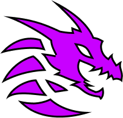

World Of Fantasy Dragons
Дракон
Дракон — це легендарна істота, яка з'являється в міфах багатьох культур. У західному уявленні це:
- Великий ящіроподібний монстр;
- Чотири лапи + пара величезних крил;
- Здатність дихати вогнем, льодом або блискавками;
- Мудрий або хижий, залежно від контексту;
Виверн
Виверн — це крилатий драконоподібний монстр, який зазвичай має:
- Дві лапи (на відміну від чотириногих драконів);
- Великі шкірясті крила, що також виконують функцію передніх кінцівок (як у кажанів);
- Довгий хвіст, іноді з отруйним жалом або шипами;
- Гострі зуби і кігті, агресивну вдачу;
Лун
Лун — це міфічна істота в китайській культурі, що символізує силу, мудрість, процвітання та імператорську владу.
- Довге, змієподібне тіло, іноді довжиною в сотні метрів;
- Без лап;
- Без крил, але вміє літати, бо має магічну силу;
- Обличчя як у верблюда, роги як у оленя, вуса як у сома, луска як у коропа — кожна частина має свій зміст;
Гідра
Гідра — це багатоголове чудовисько з давньогрецької міфології.
- Змієподібне тіло, іноді з лапами;
- Зазвичай 9 голів, можуть відростати;
- Живе в болоті або під землею;
- Майже невразлива в бою;
Створити свого дракона
Виберіть тип
